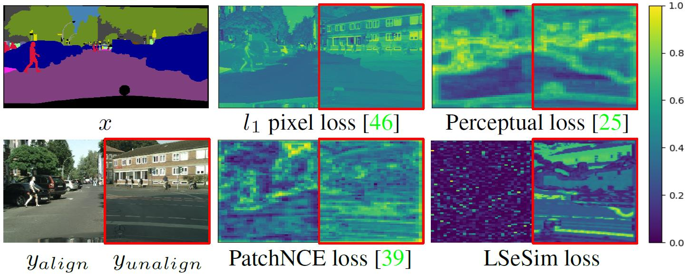

Abstract
We propose a novel spatially-correlative loss that is simple, efficient and yet effective for preserving scene structure consistency while supporting large appearance changes during unpaired image-to-image (I2I) translation. Previous methods attempt this by using pixel-level cycle-consistency or feature-level matching losses, but the domain-specific nature of these losses hinder translation across large domain gaps. To address this, we exploit the spatial patterns of self-similarity as a means of defining scene structure. Our spatially-correlative loss is geared towards only capturing spatial relationships within an image rather than domain appearance. We also introduce a new self-supervised learning method to explicitly learn spatially-correlative maps for each specific translation task. We show distinct improvement over baseline models in all three modes of unpaired I2I translation: single-modal, multi-modal, and even single-image translation. This new loss can easily be integrated into existing network architectures and thus allows wide applicability.
Method

Summary
- Error map visualization
 Given an input image, we consider an ideal result (the paired ground truth) and a totally wrong result (another image), repectively. Under such a setting, a good structure loss should penalize the wrong result, while supporting the ideal result. pixel-level loss is naturally unsuitable when there are large domain gaps, and while Perceptual loss will report significant errors for both aligned and unaligned results. PatchNCE mitigates the problem by calculating the cosine distance of features, but it can be seen the loss map still retains high errors in many regions within the aligned result. Our LSeSim has small errors on the left where ground truth paired data is provided, while having large errors on the right for unpaired data.
More Results
- Result for single-image translation
- Result for visual comparison